Quantifying emergent phenotypic and genotypic diversity in an open-ended substrate
1Department of Computer Science and Communication, Østfold University of Applied Sciences, Halden, Norway 2Department of Computer Science, Oslo Metropolitan University, Norway
Most neural cellular automata train a single update rule and share it across every cell. This substrate does the opposite: each pixel owns its own small network, and the only way to stay alive is to copy a living neighbour's.
The grid is W × H with two depth channels. The first is an alpha channel that says whether a cell is alive; the second holds hidden “chemistry”. Every pixel additionally owns an agent — a two-layer network that reads the depth-wise Moore neighbourhood and emits the cell's next state. A cell is alive only if it has both an above-threshold alpha value and a non-empty agent; an alpha value on its own cannot bring a cell to life, and an agent left in a cell whose alpha has fallen is zeroed along with the state.
A small fraction of founder cells is seeded uniformly at random and given Xavier-initialised weights. Everything else starts empty. Nothing is trained: there is no objective, no gradient and no fitness function. The only selective filter is viability — a genome whose output falls below the alpha threshold deletes its own cell.
Phenotype is never mutated directly. Cell states are produced entirely by the agents, so every observable change is a read-out of a change in the weights.
The lineage runs discrete → continuous → neural, and the step that matters here is the last one. A discrete rule table has no notion of a small change, so mutating the rule is potentially catastrophic and inheritance cannot proceed in graded steps. A continuous automaton does admit graded perturbations, but its kernel is shared, so one perturbation displaces every cell at once. A neural, per-cell rule is the first point in that progression at which a perturbation can be graded and local at the same time — which is exactly what lets one lineage drift while its neighbours do not.
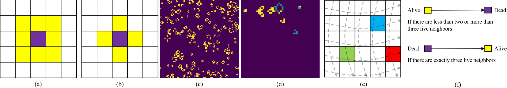
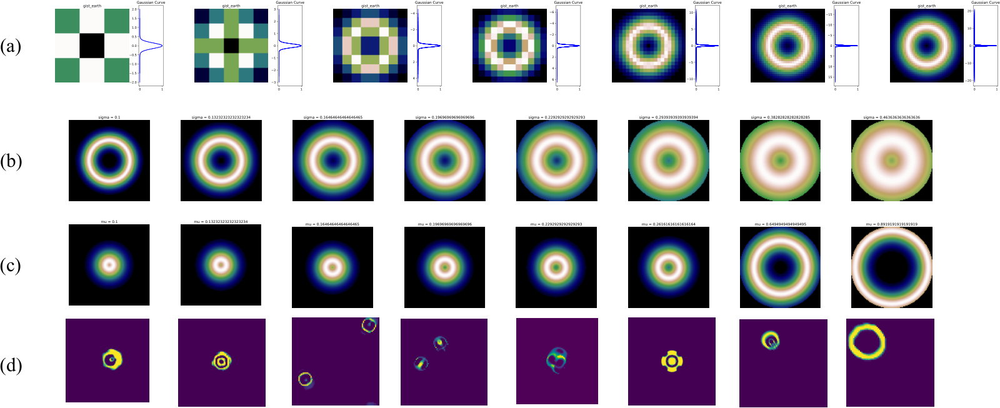
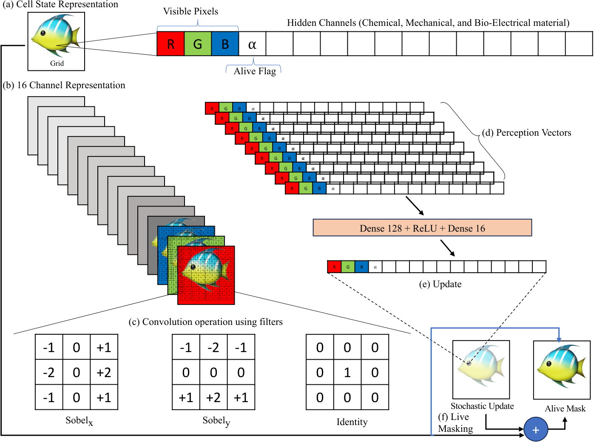
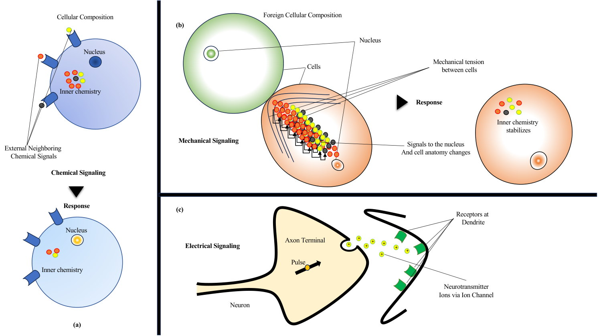
The input is the flattened depth-wise neighbourhood: 3 × 3 positions × 2 channels = 18 values. A hidden width of 2 and an output of 2 gives 44 parameters — 36 + 2 weights and biases in the first layer, 4 + 2 in the second. Only the 40 weights mutate; the biases are left untouched. Two hidden units is a deliberate lower bound rather than a tuned choice: it is the smallest layer that still admits a non-linear, non-separable map, so any structure that appears cannot be attributed to spare capacity. Capacity is also expensive here — a 200 × 200 grid holds 40,000 independent agents, about 1.8 million parameters, each deep-copied and mutated across 1000 generations and five folds.
Moore neighbourhood at (i, j)
Boundaries wrap, so the centre cell counts as one of its own neighbours.
Alive.
The agent returns an above-threshold alpha, so the cell survives into the next generation carrying this state.
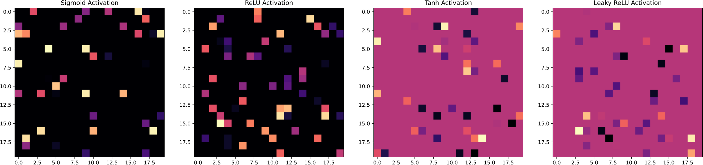
One generation is a single scan over every cell. Four things can happen to a cell, and which one happens decides whether its lineage continues.
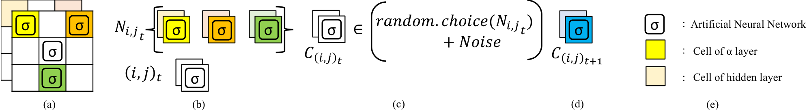
A cell with no living neighbour cannot be reached by inheritance, so it is cleared outright — state and weights together.
One detail of the released implementation is worth stating plainly, because it is easy to miss from the four-step summary. When a cell enters the inheritance branch, the reference code checks whether the cell's own network is still all-zero. If it is — the cell was dead, and this is a birth — the neighbour's genome is copied and mutated. If the cell was already alive, the neighbour's genome is copied unchanged. Only dead cells acquire new weights. The consequence is that the mutation rate is coupled to the death rate: a substrate with no turnover produces almost no new genomes, which is exactly what the unbudgeted runs in section 6 show.
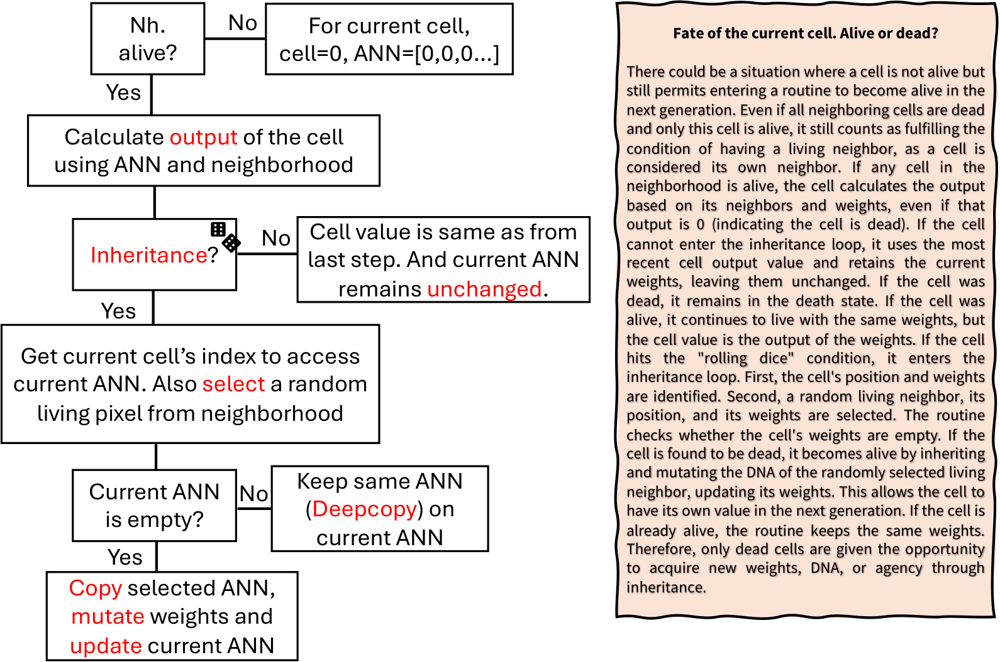
Because inheritance requires a living neighbour, living cells create a local positive feedback: if my neighbour is alive, I have a better chance of living longer. That feedback drives the growth phase. Repeated clone-and-mutate steps then let ancestor–descendant lineages drift until a descendant is, by the coarse-graining used here, a different species.
A faithful re-implementation of nca.py in this page. Same liveness gate, same birth-only mutation, same budget routine, same genotype colourings. Change a parameter and the ecosystem changes under your cursor.
The budget slider's top position is ∞: mortality off. Entropy is normalised by the alphabet the activation admits — |Σ| = 6 for sigmoid, 11 for tanh — so it is comparable across runs that share one.
What the wound tool is, and is not.
Two things this port does not reproduce, and why that is interesting.
The live substrate is a port, not a rerun: it reproduces the update rule, the thresholds, the budget routine and both genotype colourings, but it uses typed arrays instead of one PyTorch module per pixel, and its grids are smaller than the paper's 200 × 200 so a generation fits in a frame. The presets are named for what they show rather than after numbered experiments. Numbers taken from the paper appear in section 6, drawn from the published runs.
All six tools are the same object: a coarse-graining φ that labels each living cell, and a functional D of the resulting label distribution. They differ only in what φ looks at and what D computes.
Phenotypic tools take φ to be the observable cell state rounded to one decimal place. Genotypic tools take φ to be a colour code of the agent's weight vector. For D the paper uses either richness — the size of the support — or normalised Shannon entropy, the q = 0 and q → 1 members of the Hill-number family, plus two dispersion statistics that summarise the same field by its spread.
“Species” here means one thing only: a label class of φ. A rounded cell-state type for phenotypic diversity, a genome colour class for genotypic diversity. There is no claim of reproductive isolation, and every count of species below is a count of occupied labels at a stated coarse-graining.
This is the paper's Table 3. It is also the argument for treating GEP as the headline phenotypic signal: it is the only phenotypic tool here that is simultaneously bounded, normalised by a fixed |Σ|, and responsive to the whole type distribution rather than to one summary statistic of it.
| Metric | Coarse-graining φ | Functional D | Range | Dominant failure mode | Recommended use |
|---|---|---|---|---|---|
| CTFP | Cell state, rounded to 0.1 | Per-label counts | 0 to Tc | Vector-valued rather than scalar; must be read visually | Tracking speciation and drift within a run |
| GEP | Cell state, rounded to 0.1 | Normalised Shannon entropy | [0, 1] | Records how evenly types are mixed, not which types they are | Headline PD signal; comparable across runs sharing an activation |
| GCVP | Cell state, rounded to 0.1 | Fraction differing from the median | [0, 1] | Saturates near unity on a full, real-valued grid regardless of true diversity | Binary substrates only; the GEP–GCVP crossing as a collapse diagnostic |
| CLOGV | Cell state, local 3 × 3 statistics | Global s.d. of local s.d. | [0, ∞) | Scale-dependent and confounded with occupancy; levels not comparable across runs | Spatial heterogeneity of local organisation within one run |
| GHC | 24-bit hash of the full genome | Richness (unique colours) | 0 to Tc | Many-to-one (≈0.1% collisions at full occupancy); measures identity, not distance | Genotypic turnover and lineage identity; read alongside occupancy |
| RWSP | Three fixed loci mapped to (R, G, B) | Richness (unique colours) | 0 to Tc | Observes 3 of 40 loci, so systematically under-reports genotypic diversity | Control for what a sparse probe misses |
A metric the authors keep in order to discredit it.
GCVP compares every cell to the median cell. Once a grid is full and real-valued, the median rarely matches any given cell, so the measure sits near unity no matter how little diversity is actually present. In the published runs it reaches exactly 1.000 at generation 1000 in the four unbudgeted sigmoid configurations (17, 19, 21, 23) — while GEP in the same runs reads 0.72 to 0.75. The paper keeps GCVP rather than dropping it because it is inherited from the CA literature and is still applied to real-valued grids in practice, so documenting the failure explicitly is more useful than a silent omission.
Agent genomes are standardised, clustered with k-means and projected with PCA; clusters stand in for species, and area and stacked-bar variants give prototype speciation plots. It is reported as complementary rather than as a headline metric. Two caveats travel with it: k is fixed for visualisation rather than chosen by a stability or model-selection criterion, and no stability analysis of the k-means solution was carried out. Cluster counts must not be read as estimates of a number of species. CNWA is used only to show that the genome cloud is not structureless and that its structure changes over generations.
Prior work visualises a few random gene values directly as an RGB triple. An RGB encoding admits three, so three is exactly the practice under test — and three of forty turns out to be far too few.
GHC hashes an agent's entire weight vector to 24 bits and splits it into an (R, G, B) triple. RWSP fixes three weight indices for the whole run and colours each cell by those three values only — a genetic microscope pointed at three loci. Because the fixed loci are rarely the mutated ones, RWSP tends toward large single-colour colonies while GHC reflects the real turnover.
The asymmetry is quantifiable rather than incidental. A single inheritance event perturbs at least one probed locus with probability 1 − (1 − ppp)3, against 1 − (1 − ppp)40 for the whole genome.
At the long runs' setting, ppp = 0.02, the two probabilities are 55.4% and 5.9% — a ratio of roughly nine to one, and the origin of the persistent gap between the two unique-colour curves below. At ppp = 0.80 they become effectively 100% and 99.2%, which is why the curves converge only at very high perturbation.
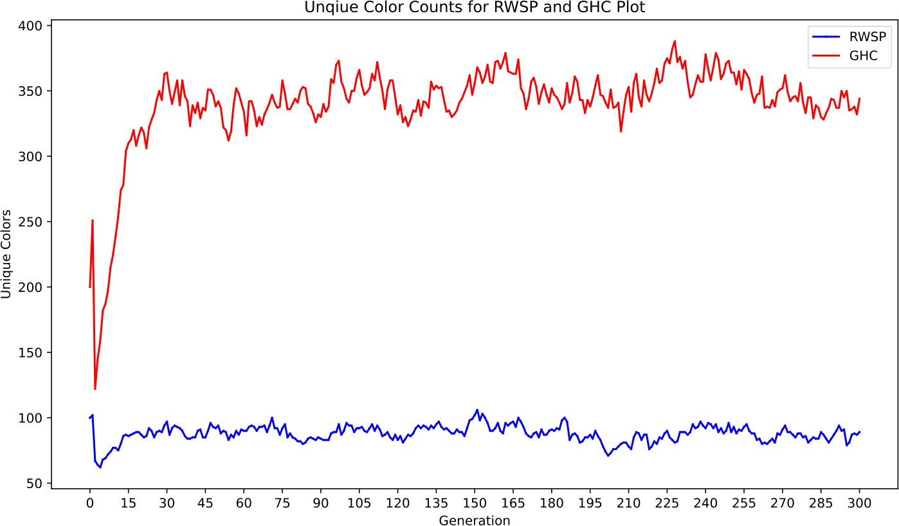
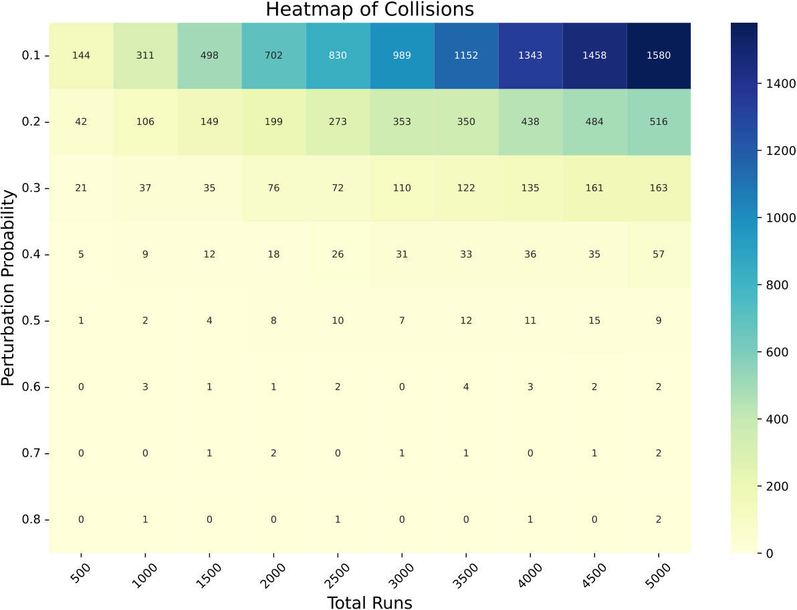
Two different questions sit behind that figure. The empirical test measures how often a genome and its own mutated descendant hash to the same colour — that is what decides whether GHC can see a mutation at all.
The combinatorial bound measures how often two unrelated genomes coincide, which is what decides whether the unique-colour count under-reports the population. With 224 = 16,777,216 colours, the expected number of colliding pairs among N living agents is about N2/225. At full occupancy of a 200 × 200 grid, N = 40,000 gives roughly 48 colliding pairs — about 0.12% of agents. On the 50 × 50 small runs it is 0.19 pairs. Both are two orders of magnitude below the GHC–RWSP gaps.
1680 small runs at 50 × 50 over 300 generations mapped the parameter space. Twenty-four configurations were then taken to 200 × 200 for 1000 generations, each executed five-fold.
The long-run design is a factorial grid in two blocks. Experiments 1–16 form a complete 2 × 2 × 2 × 2 over init_prob ∈ {0.02, 0.08}, ip ∈ {0.10, 0.50}, b ∈ {4, 8} and activation. Experiments 17–24 form a complete 2 × 2 × 2 over init_prob, ip ∈ {0.05, 0.10} and activation, with mortality removed. The mutation rate is held at ppp = 0.02 in every long run, so the effects of occupancy, inheritance and mortality can be separated from the effect of mutation.
Curves are recovered from the vector plots published with the paper, resampled onto a common 5-generation grid. As a check on the recovery: every run starts with a GHC count equal to init_prob × 40,000, which is the founder count by construction — 800 cells at init_prob = 0.02 and 3,200 at 0.08.
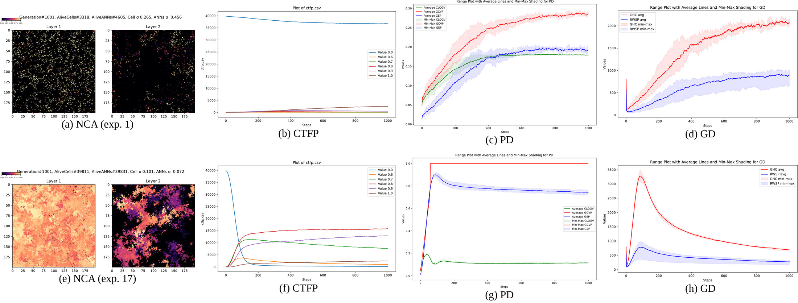
The robustness claim is stated operationally. A configuration is persistent if the living-cell count stays strictly positive in all five folds for all 1000 generations, and self-maintaining if that count also stays within a bounded band after the initial growth transient instead of drifting to zero or to saturation. Twenty of the 24 long configurations are persistent, and the persistent ones are self-maintaining in this sense. The claim applies to those twenty and not to the substrate at every parameter setting.
The four exceptions — experiments 9, 10, 13 and 14 — all combine ip = 0.50 with b = 4, and die within the first few tens of generations. The two settings pull in opposite directions on the same quantity. A budget of 4 forces every cell to die after four generations, so the population survives only if each cell seeds a viable neighbour inside that window; ip = 0.50 means a living cell replaces its own working genome roughly every other generation, so a genome that does clear the threshold is unlikely to be kept long enough to do the seeding. That it is the combination that matters is visible in the table: the same ip = 0.50 with b = 8 survives (11, 12, 15, 16), and the same b = 4 with ip = 0.10 also survives (1, 2, 5, 6), in both activations and at both founder densities.
Long configurations that are persistent and self-maintaining across all five folds and all 1000 generations.
The finest resolution five folds allow. Complete separation of ten fold values is the most extreme outcome a two-sided Mann–Whitney U test has available, and equals 2/252.
Parameters alive at once on a full 200 × 200 grid — 40,000 independent agents of 44 weights each, deep-copied and mutated every generation.
Non-overlapping min–max envelopes in the charts above therefore already indicate separation at p ≈ 0.0079, and no pair of configurations in this study can be resolved more finely than that without additional folds.
Drive phenotypic diversity up and genotypic diversity collapses. Drive genotypic diversity up and the phenotype collapses to a single dominant type. One parameter sets where on that frontier a run lands.
At low ppp many types coexist in CTFP but few unique genomes appear in the genotypic count. At high ppp many unique genomes appear but the phenotype collapses onto one type. This mirrors the resource-allocation trade-off reported for bacteria, where investing in fast growth — few, specialised genes — sacrifices trait flexibility and the other way round.
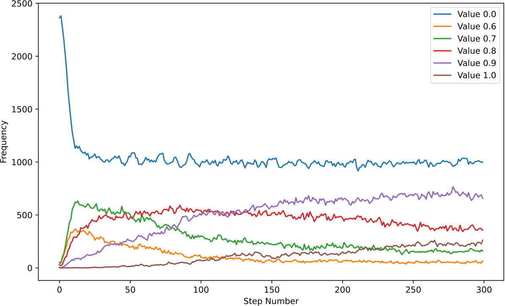
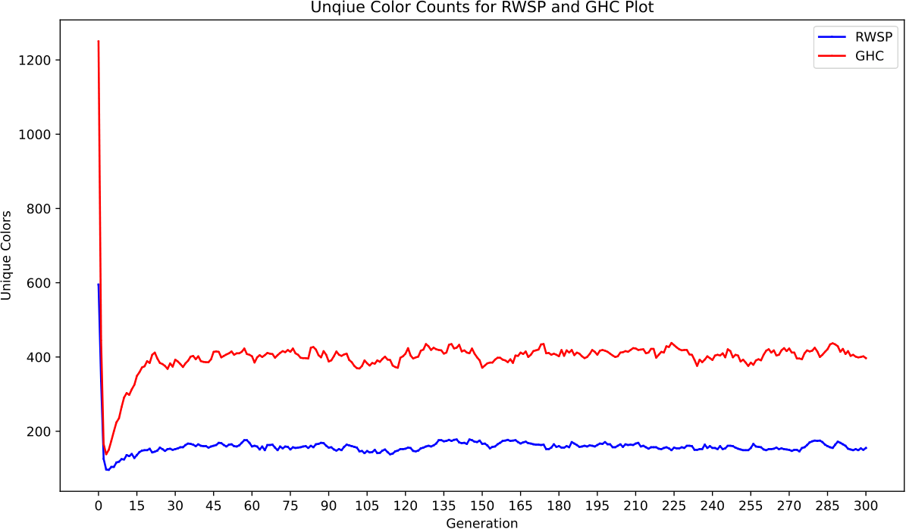
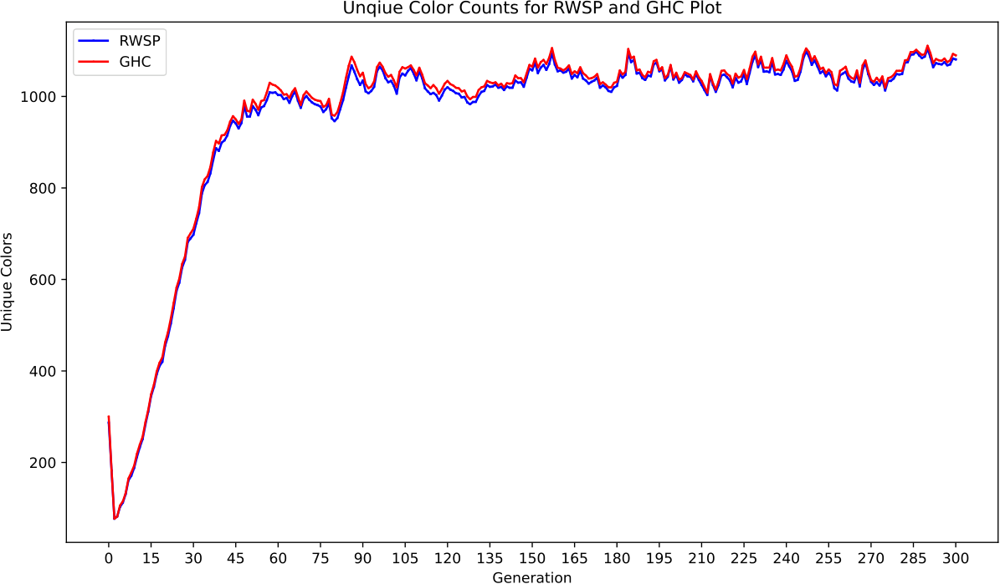
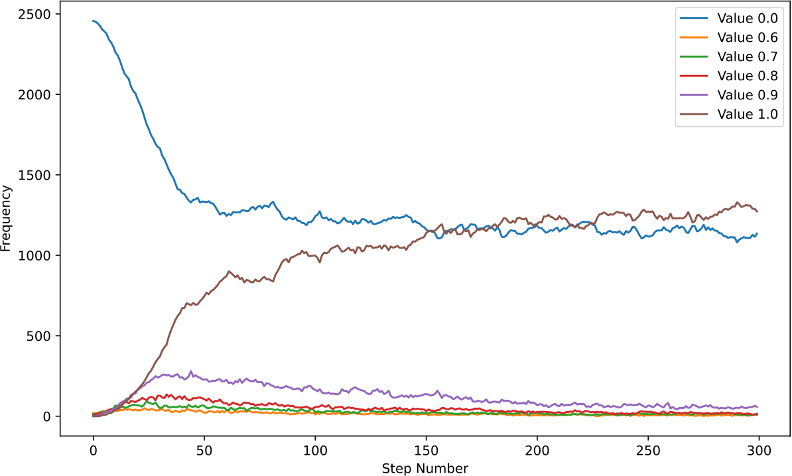
The most plausible mechanism is saturation of the agent nonlinearity, and it follows from the update rule rather than from any tuning. Mutation is additive and never reset, so a weight travelling down a lineage accumulates perturbations at a rate proportional to ppp × ip, each drawn uniformly on [−1, 1] and hence of variance 1/3. The weight vector performs an unbiased random walk whose variance grows linearly in the number of inheritance events. A hidden unit sums 18 such weights against neighbourhood values, so for unit-scale inputs its pre-activation standard deviation grows like √(6 · ppp · ip · g) after g generations.
1333
Saturated units emit states at the extremes of the output range, and those extremes round into a single CTFP bin. The phenotype collapses onto one dominant type while the underlying weight vectors keep diverging — which is exactly what the genotypic count reports. Viability selection sharpens the effect: a lineage that saturates below the alpha threshold removes its own cells, so the survivors are the ones saturating on the live side of the threshold. At low ppp the converse holds. Weights stay in the near-linear regime, small genotypic differences map to different rounded states and several types coexist, while few genomes drift far enough for the hash to register novelty.
This is an account, not a measurement.
The saturation argument is consistent with the observations but was not instrumented. The direct test — histograms of weight magnitude and of pre-activation variance as a function of ppp — is named in the paper's conclusions as future work, and no preliminary data for it is reported. Separately, the trade-off is characterised across the small-run sweep, where ppp ranges over 0.02–0.80. Because ppp is held fixed in the long runs, it is stated as a systematic tendency over that sweep rather than as a hypothesis tested at the 1000-generation scale.
Because phenotype is a read-out of genotype, two runs with identical settings can converge to the same observable colonies while carrying different lineages.
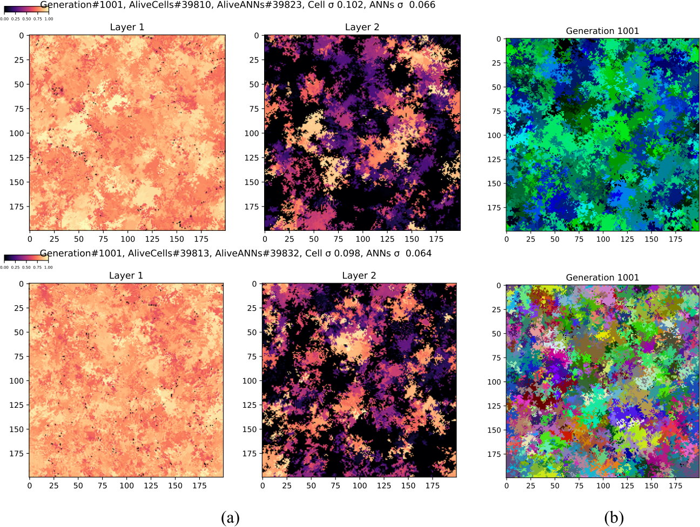
We are deliberately careful about what this shows. Two runs whose grids agree step for step are behaviourally equivalent at the resolution measured here; the two genome sets were not evaluated on any external task, so “same phenotype” means observational equivalence rather than demonstrated functional identity. The clusters below likewise arise from drift under viability selection, with no fitness function beyond liveness — which is why the lineages are described as diverging rather than as adapting, and why open-endedness is used in the descriptive sense of continuing production of novel genotypes without a fixed objective, rather than as a claim that any formal open-endedness criterion has been met.
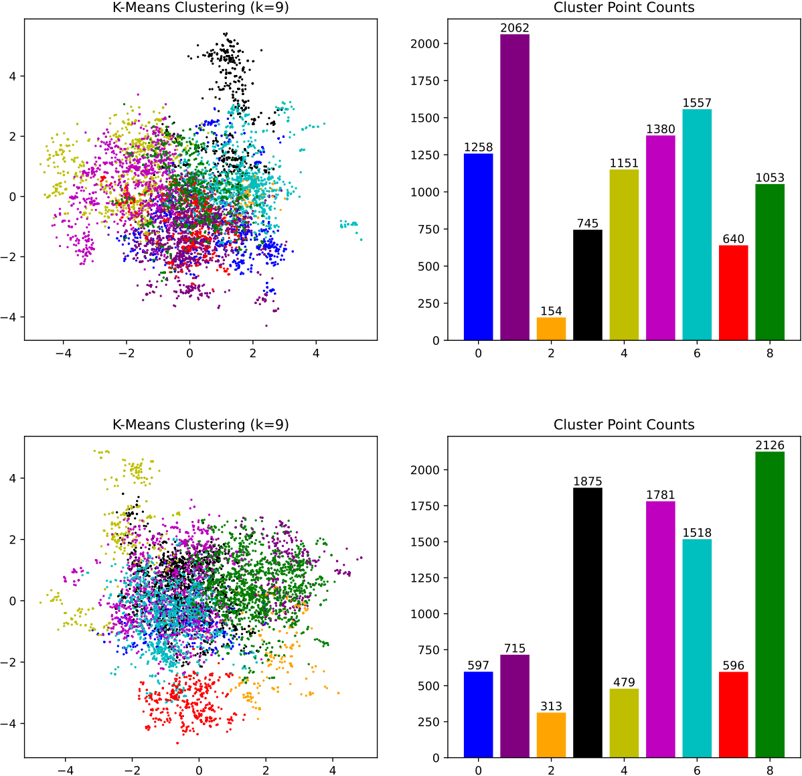
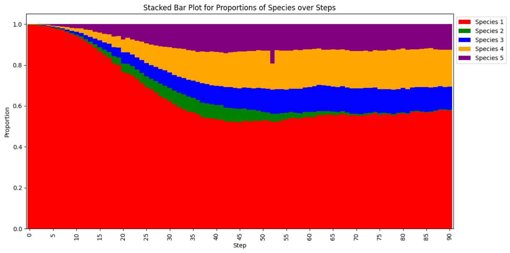
Two small demonstration runs from the repository, in all three views. These are 30 × 30 grids, chosen for legibility — the full-resolution 1000-generation animations for every long run are on the project's video channel.
Frames are sampled and palettised for the web. Click a panel to play it.
The claims above are bounded by the design in specific ways. These are the paper's own, set out so they can be weighed directly.
Every result uses the same 44-parameter agent. Whether the trade-off and the metric behaviours persist at hidden widths of 4 or 8 is untested.
ppp varies only in the small runs, so the trade-off is characterised at 50 × 50 over 300 generations and assumed, rather than shown, to carry over.
Five folds support distribution-free envelopes and complete-separation statements at p ≈ 0.0079, but not finer effect-size estimation.
All phenotypic metrics use one-decimal rounding; no systematic sweep over that precision was run. A finer binning would shift the level of the entropy.
Both unique-colour counts are bounded above by the number of living cells, so genotypic curves must be read alongside occupancy rather than as free-standing diversity estimates.
GHC measures identity, not distance. Genomes are not compared under a metric such as Euclidean or cosine distance on standardised weights.
Parent–offspring links are not logged during simulation, so neither GHC nor CNWA is validated against a true genealogy.
The only pressure is viability together with spatial availability. What is reported is drift under viability selection, not adaptation towards any objective.
Toroidal boundaries, uniform noise on [−1, 1], mid-point alpha thresholds, the coarse budget ladder {4, 8, ∞} and a fixed scan order are all unexplored alternatives.
Two words used in a narrow sense.
Three of the extensions follow directly from the limits above and can be specified now. The saturation account can be tested by re-instrumenting the simulator to record weight-magnitude histograms and pre-activation variance, then re-running the ppp sweep under that instrumentation. Lineage ground truth can be obtained by logging the parent index at every inheritance event, which converts GHC and CNWA from descriptive tools into estimators that can be scored against a known genealogy. And the adversarial annihilation kernel — the wound tool in section 3 — becomes a measurement once the recovery time of the living-cell fraction and of the global entropy, and the genotypic composition of the refilled region, are logged. That is the untrained analogue of the regeneration experiments in Growing NCA.
Food-Led Intelligence replaces the life budget, whose coarse ladder {4, 8, ∞} is one of the fixed choices above, with an energy budget. Cells pay every tick for maintenance and thinking, and pay again to move and to build a daughter cell. Energy enters only as food: a cell refills by eating, or from kin through gap junctions. Each cell weighs the food it smells with a small attention head of 44 inherited weights, the same parameter count as the agent in section 1, and mutation still happens only at birth. It runs in your browser across ten preset worlds, with tools to place food, walls and toxins, wound a colony, and inspect a single cell as it decides where to go.
A side project built on the substrate, not a result of the paper: nothing in it is reported in the article or measured by the metrics above.
The article is accepted at Journal of Imaging (MDPI) and the volume, pages and publisher DOI are not issued yet. Until they are, the version of record to cite is the arXiv preprint, which carries the same text and the full supplementary material.
Copying gives plain text, so the italics APA and MLA ask for — the title in APA, the container in MLA — have to be restored in your document.
@misc{Jain2026SelfReplicatingNCA,
author = {Jain, Sanyam and Reimers, Felix Simon and Nichele, Stefano},
title = {{Self-Replicating Neural Cellular Automata: Quantifying Emergent
Phenotypic and Genotypic Diversity in an Open-Ended Substrate}},
year = {2026},
eprint = {2609.19902},
archivePrefix = {arXiv},
primaryClass = {q-bio.PE},
doi = {10.48550/arXiv.2609.19902},
url = {https://arxiv.org/abs/2609.19902},
note = {Accepted for publication in Journal of Imaging (MDPI)}
}
% Replace with this entry once Journal of Imaging issues volume, pages and DOI.
@article{Jain2026SelfReplicatingNCAJImaging,
author = {Jain, Sanyam and Reimers, Felix Simon and Nichele, Stefano},
title = {{Self-Replicating Neural Cellular Automata: Quantifying Emergent
Phenotypic and Genotypic Diversity in an Open-Ended Substrate}},
journal = {Journal of Imaging},
publisher = {MDPI},
year = {2026},
note = {Accepted; volume, pages and DOI to follow}
}
@mastersthesis{Jain2024AIGA,
author = {Jain, Sanyam},
title = {AI Generating Algorithms with Self-Organizing Neural Cellular
Automata: Quantifying Genetic and Phenotypic Diversity,
Emerging Growth, and Speciation},
school = {{\O}stfold University College},
address = {Halden, Norway},
year = {2024}
}
Jain, S., Reimers, F. S., & Nichele, S. (2026). Self-replicating neural cellular automata: Quantifying emergent phenotypic and genotypic diversity in an open-ended substrate (arXiv:2609.19902). arXiv. https://doi.org/10.48550/arXiv.2609.19902
Jain, Sanyam, et al. "Self-Replicating Neural Cellular Automata: Quantifying Emergent Phenotypic and Genotypic Diversity in an Open-Ended Substrate." arXiv, 17 Sept. 2026, arxiv.org/abs/2609.19902.
Jain, Sanyam, Felix Simon Reimers, and Stefano Nichele. "Self-Replicating Neural Cellular Automata: Quantifying Emergent Phenotypic and Genotypic Diversity in an Open-Ended Substrate." Preprint, submitted September 17, 2026. https://doi.org/10.48550/arXiv.2609.19902.
S. Jain, F. S. Reimers, and S. Nichele, "Self-replicating neural cellular automata: Quantifying emergent phenotypic and genotypic diversity in an open-ended substrate," 2026, arXiv:2609.19902. [Online]. Available: https://doi.org/10.48550/arXiv.2609.19902
TY - GEN AU - Jain, Sanyam AU - Reimers, Felix Simon AU - Nichele, Stefano TI - Self-Replicating Neural Cellular Automata: Quantifying Emergent Phenotypic and Genotypic Diversity in an Open-Ended Substrate PY - 2026 DA - 2026/09/17/ PB - arXiv DO - 10.48550/arXiv.2609.19902 UR - https://arxiv.org/abs/2609.19902 KW - q-bio.PE KW - cs.LG KW - cs.NE N1 - Accepted for publication in Journal of Imaging (MDPI) ER -
Sanyam Jain, Felix Simon Reimers and Stefano Nichele. "Self-Replicating Neural Cellular Automata: Quantifying Emergent Phenotypic and Genotypic Diversity in an Open-Ended Substrate." arXiv:2609.19902 [q-bio.PE], September 2026. Accepted for publication in Journal of Imaging (MDPI). https://arxiv.org/abs/2609.19902